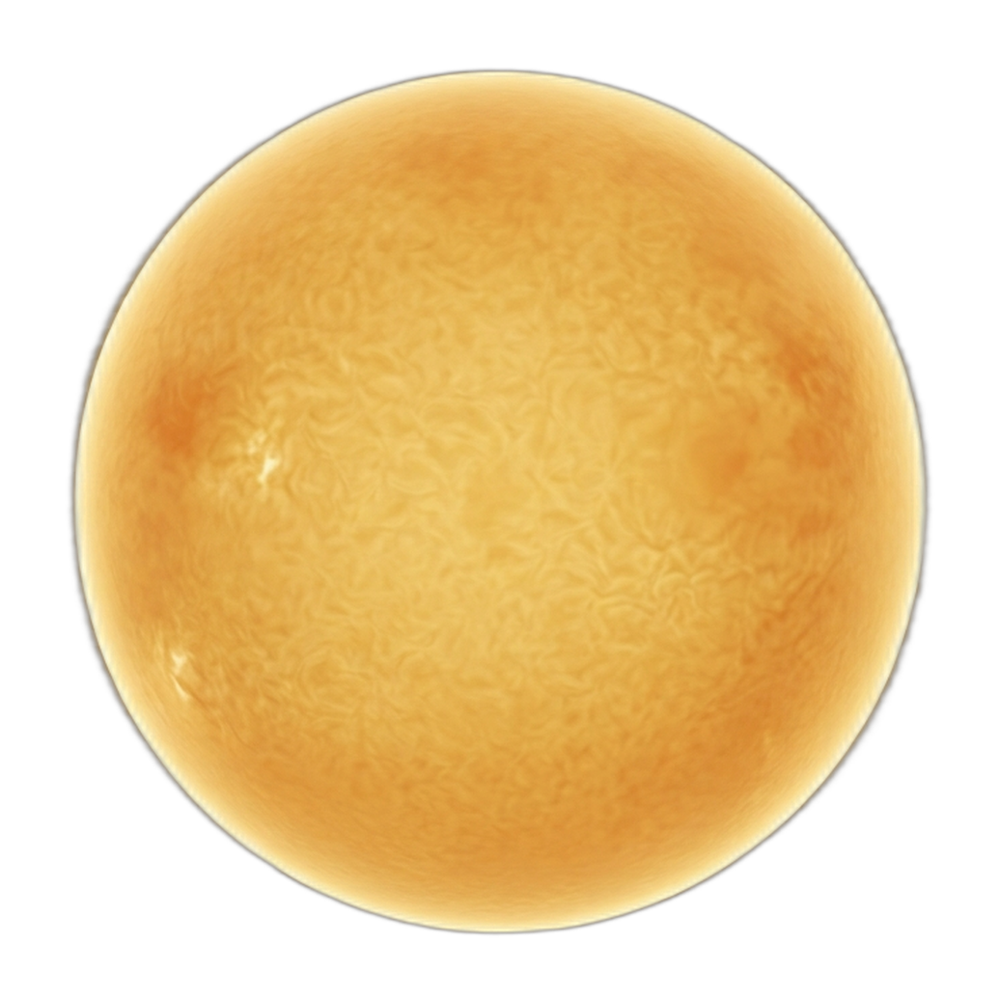
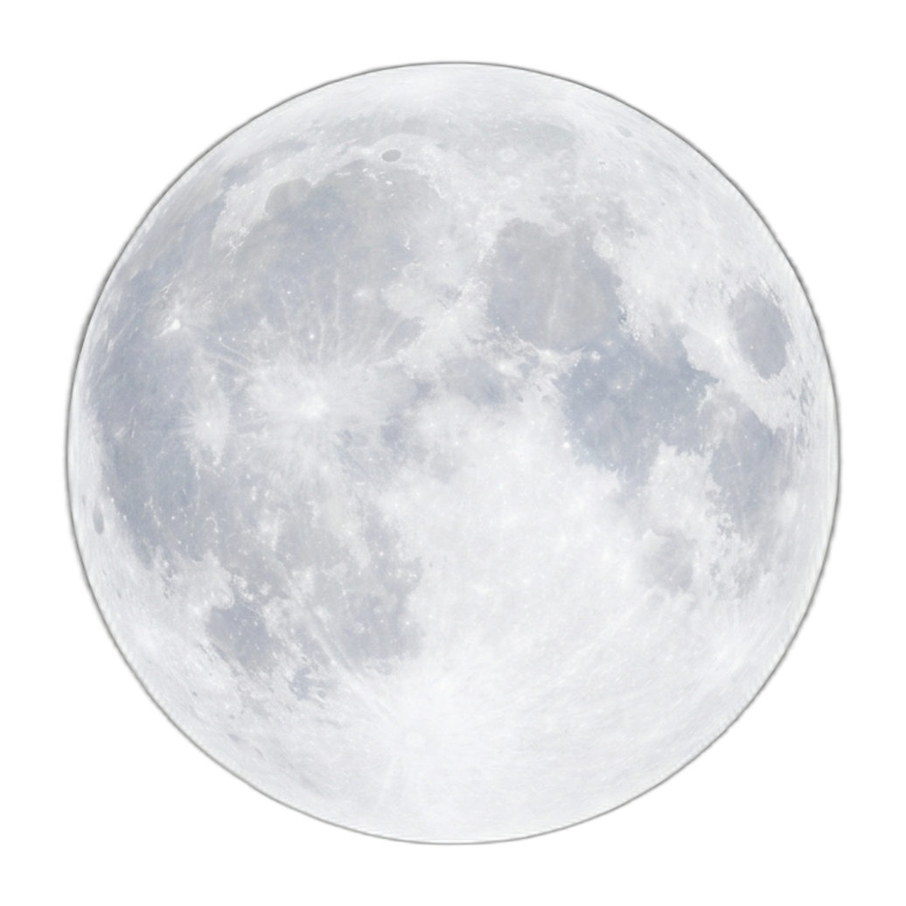

القمر --% متزايد
NW NE
▲ اتجاه القبلة الحقيقي ---° دقة عالية جداً ◈ ☀ الشمس مرتفع الارتفاع --°
التاريخ الهجري 🌙 ---
التاريخ الميلادي 📅 ---
الصلاة القادمة --- --:--
القبلة الرقمية اتجاه مباشر 

التحقق الفلكي الشمس والقمر
مواقيت الصلاة والأذان المواقيت والتنبيه القرآن الكريم 114 سورة الأذكار حصن المسلم
🛡 حالة النظام جميع الأنظمة تعمل بكفاءة
---° --% ---
--- ---
--- --:-- --- ---
🛰️ GNSS متعدد الأبراج + الانحراف القطبي
GPS · GLONASS · Galileo · BeiDou والتأثيرات الجيوفيزيائية
🛰️ أنظمة الملاحة العالمية
📡 موقعك الحالي — متعدد الأنظمة
القبلة من موقعك الحالي ---°
محسوبة من إحداثياتك الحقيقية
📡 تحديث GPS
📡 إعادة GPS
يستخدم GPS + GLONASS + Galileo + BeiDou عبر الجهاز · مجاني بالكامل · لا يتطلب مفتاح API
🇺🇸 GPS 31 قمر
WGS-84 · 3-5م · 20,200 كم
🇷🇺 GLONASS 24 قمر
PZ-90.11 · 4-6م · 19,100 كم
🇪🇺 Galileo 30 قمر
GTRF · ~1م · 23,222 كم
🇨🇳 BeiDou 35 قمر
CGCS2000 · 3-5م · مختلط
الدقة المدمجة Multi-constellation
~1-2 متر · تأثير على القبلة < 0.001°
🌍 الانحراف القطبي — تذبذب تشاندلر
⚡ الأحداث الجيوفيزيائية وتأثيرها الحقيقي
🌊 زلزال اليابان 2011 — M9.1 توهوكو
تحرّك محور الكتلة 17 سم نحو 133°E — وليس محور الدوران الجغرافي. الفرق بين المحورين أصلاً ~10 أمتار. قصّر اليوم 1.8 ميكروثانية.
تأثير على القبلة: 0.000001° — يستحيل قياسه
🏗️ سد الثلاث الوديان — الصين
40 مليار طن ماء → تحريك القطب ~2 سم + إبطاء الدوران 0.06 ميكروثانية. تأثير زاوي: 0.00007 قوس ثانية.
تأثير على القبلة: 0.0000003° — صفر عملياً
🌀 تذبذب تشاندلر — دوري طبيعي (433 يوماً)
يحرك القطب الدوراني 6-9 أمتار دورياً — أكبر بكثير من أي سد أو زلزال. أنظمة GNSS وIERS تُصحّحه تلقائياً عبر معلمات EOP.
مُصحَّح تلقائياً في هذا التطبيق
📊 مقارنة دقة أنظمة تحديد القبلة
موضع الشمس VSOP87 (نهاراً)
~0.01°
نجم القطب بولاريس (ليلاً)
~0.02°
موضع القمر ELP2000 (ليلاً)
~0.1°
GPS + GLONASS + Galileo + BeiDou
< 0.001°
بوصلة + تصحيح WMM2025
~1-3°
بوصلة هاتف غير معايرة
5-30°
زلزال اليابان 2011
0.000001°
سد الثلاث الوديان
0.0000003°